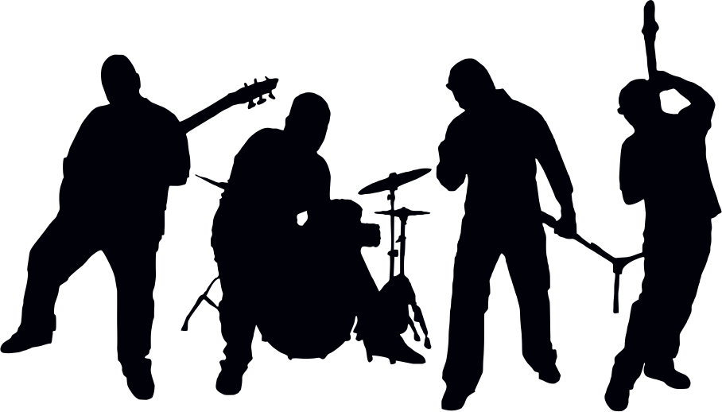

Letras e Cifras
Bandas internacionais
Bandas que marcaram épocas...
Clique no link abaixo para acessar!

Bandas nacionais
Bandas e cantores que marcaram épocas...
Clique no link abaixo para acessar!

Benefícios da música para a saúde que todo mundo precisa conhecer:
Qual relação existe entre música e saúde? Muitas pessoas não fazem ideia, mas os benefícios da música para a saúde são enormes. E em diversos sentidos. Não importa o gênero musical, ouvir música é considerada uma das melhores opções para lidar com emoções e, até mesmo, controlá-las quando uma pessoa está com dificuldades de expressar ou comunicar aquilo que está sentindo ou pensando. A música para a saúde funciona como um verdadeiro “remédio”, acalmando, relaxando e, acredite: aliviando dores, melhorando a memória e sendo um grande estimulador de atividades físicas.
OS BENEFÍCIOS DA MÚSICA PARA A SAÚDE
A primeira coisa para entender os benefícios da música para a saúde é saber que ela é capaz de ativar o centro de prazer do cérebro, do mesmo jeito que acontece com o ato sexual ou comer chocolates, por exemplo. música é capaz de estimular a liberação de dopamina e causa a sensação de bem-estar. Não à toa ela vem sendo bastante utilizada por médicos, terapeutas e preparadores físicos como tratamento de diversos problemas. E os resultados têm sido cada vez melhores.
COMO A MÚSICA PODE BENEFICIAR A SAÚDE
Induz ao movimento:
naturalmente o ser humano nasce com ritmos, por isso, a música ajuda tanto durante as atividades físicas, por exemplo.
Ameniza dores:
quando uma pessoa começa a cantar ela está distraindo o seu foco da dor para a música, assim muda a sua atenção do problema para um ato paliativo.
Promove autoconhecimento:
quando uma pessoa escuta música ela passa a viajar por mundos desconhecidos e começa a descobrir novas sensações, emoções e sentimentos próprios.
Melhora a comunicação:
a música é uma forma alternativa de organizar ideias, porque têm tempos e cadências diferentes da fala.
Cria vínculos:
um bom exemplo é quando uma mãe canta para o filho, nesse processo o bebê consegue memorizar a voz da mãe e começa a criar vínculos.
Acalma:
é uma excelente forma de relaxar, escutar música ajuda a combater o estresse, não à toa motoristas tendem a se manterem mais calmos quando escutam música.
Fortalece a memória:
porque estimula novos caminhos e conexões no cérebro.
Diminui os sintomas da depressão:
alguns estudos mostraram que
músicas de meditação e relaxamento atuam diretamente
nos sintomas da depressão. Pacientes que foram submetidos a sessões diárias de
musicoterapia apresentaram um quadro de 25% a mais de melhora quando comparados
aos pacientes que não tiveram contato com a música. De acordo com a enfermeira
Eliseth Leão, pesquisadora do Instituto Israelita de Ensino e Pesquisa Albert
Einstein, em entrevista à Veja Saúde, “regiões responsáveis por atividade motora,
memória, linguagem e sentimentos são recrutadas para interpretar os estímulos
sonoros”. “Elas também são capazes de reduzir o nível de estresse durante um
procedimento cirúrgico, baixam a pressão arterial e a frequência cardíaca e
até aceleram a recuperação após uma sessão de exercícios físicos”, afirma o
fisiologista Vitor Engrácia Valenti, da Universidade Estadual Paulista,
também em entrevista à revista Veja Saúde.